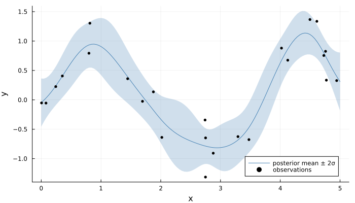

Gaussian Process Regression
A Gaussian process regression with latent kernel hyperparameters, using the composable kernel language from the Modeling page. The Gaussian noise is integrated out analytically inside gaussianprocess, so the only latents are the (log) hyperparameters — three parameters regardless of how many data points there are.
The data and chains here are intentionally tiny so the docs build stays fast (this runs in CI on every push). Scale everything up for real work.
using Random
using UncertainTea # the @tea DSL, choicemap, distributions, kernels
using UncertainTea.Inference # nuts_chains
using UncertainTea.Diagnostics # summarize, rhatThe data
Noisy draws from a smooth function on [0, 5]. Inputs are a d × n matrix (one column per observation; here d = 1).
rng = MersenneTwister(11)
n = 24
xs = sort(rand(rng, n) .* 5)
X = reshape(xs, 1, n)
y = sin.(1.8 .* xs) .+ 0.25 .* randn(rng, n)24-element Vector{Float64}:
-0.0525302530374843
-0.05497750154707237
0.2252901980389861
0.40614143199160024
0.792739230109464
1.3034325204843427
0.3596503552531571
-0.025193985195111387
0.13597899472048533
-0.6386149876791598
⋮
-0.6763240732424207
0.8799640979897343
0.6742706406769547
1.366179885415281
1.3356722280343498
0.7542482195873623
0.8252994364199269
0.3347562301845131
0.3276512667580791The model
A Matérn-5/2 kernel — the common default when the RBF is too smooth — with log-normal priors on the lengthscale, signal deviation, and noise. Because the hyperparameters flow through exp, they are unconstrained latents and gradient-based samplers apply directly.
@tea static function gp_reg(X)
log_l ~ normal(0.0, 1.0)
log_v ~ normal(0.0, 1.0)
log_n ~ normal(-1.0, 1.0)
{:y} ~ gaussianprocess(X, matern52_kernel(exp(log_l), exp(log_v)), exp(log_n))
return log_l
end
constraints = choicemap((:y, y))ChoiceMap(1 entries)Sampling
chains = nuts_chains(
gp_reg,
(X,),
constraints;
num_chains=2,
num_samples=200,
num_warmup=200,
rng=MersenneTwister(12),
)HMCChains(nuts, gp_reg, chains=2, samples=200, acceptance_rate=0.946, divergences=0)Posterior summary
The posterior lengthscale should sit near the true wiggliness of the data (sin(1.8x) has a lengthscale of order one) and the noise near 0.25.
summarize(chains)HMCSummary(gp_reg)
space: constrained
quantiles: [0.05, 0.5, 0.95]
parameters: 3
log_l @ log_l: mean=-0.2885 sd=0.3688 median=-0.286 rhat=1.0 ess=201.0
log_v @ log_v: mean=-0.2208 sd=0.3402 median=-0.241 rhat=1.0 ess=187.7
log_n @ log_n: mean=-1.1868 sd=0.1748 median=-1.1971 rhat=1.001 ess=299.8
diagnostics:
acceptance_rate: 0.946
divergence_rate: 0.0
step_size: mean=0.3723 min=0.2863 max=0.4583
mass_adaptation_windows:
window 1 [21:45] updated=2/2 eff=24.62 mass=4.7072 clip=5.0
window 2 [46:95] updated=2/2 eff=47.82 mass=6.1227 clip=5.03
window 3 [96:180] updated=2/2 eff=80.7 mass=7.0356 clip=5.04
rhat(chains)3-element Vector{Float64}:
1.0
1.0
1.001376191198097Posterior fit
Conditioning the GP on the data at the posterior-mean hyperparameters gives the familiar fit picture: predictive mean plus a ±2σ band for the latent function on a fine grid. The conditional mean and variance are the standard GP formulas; the kernel matrices come from the package's internal kernel helpers (unexported, hence the qualified UncertainTea._gp_* calls), which keeps the example short — for real work you would average the predictive distribution over posterior draws rather than plugging in the mean.
using LinearAlgebra
using Statistics
using Plots
draws = posterior_array(chains) # (samples, chains, params)
pnames = parameter_names(chains)
hyper(p) = exp(mean(draws[:, :, findfirst(==(p), pnames)]))
l, v, nz = hyper("log_l"), hyper("log_v"), hyper("log_n")
kern = matern52_kernel(l, v)
xgrid = collect(range(0.0, 5.0; length=120))
Xg = reshape(xgrid, 1, :)
K = UncertainTea._gp_kernel_cross(kern, X, X) + (nz^2 + 1e-8) * I # train cov + noise
Ks = UncertainTea._gp_kernel_cross(kern, X, Xg) # train x grid
F = cholesky(Symmetric(K))
m = Ks' * (F \ y) # conditional mean
W = F.L \ Ks
s = sqrt.(max.(UncertainTea._gp_kernel_self(kern) .- vec(sum(abs2, W; dims=1)), 0.0))
plot(xgrid, m; ribbon=2 .* s, color=:steelblue, fillalpha=0.25,
label="posterior mean ± 2σ", xlabel="x", ylabel="y", size=(700, 400))
scatter!(xs, y; color=:black, markersize=3, label="observations")
Where to go from here
- Swap the kernel:
kernel_product(periodic_kernel(l, v, p), rbf_kernel(L, 1.0))gives the locally-periodic composition for seasonal data, and a vector lengthscale gives ARD over input dimensions. - For large
n,sparsegaussianprocess(X, Z, kernel, noise)is the FITC approximation with inducing inputsZ. - For non-Gaussian likelihoods (classification, counts) the function values themselves become latent — see the latent-GP section of the Modeling page and
elliptical_slice.
This page was generated using Literate.jl.